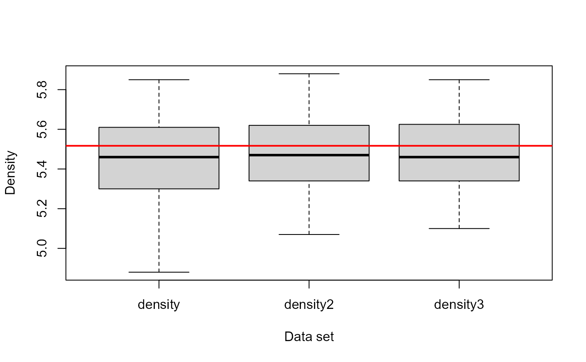
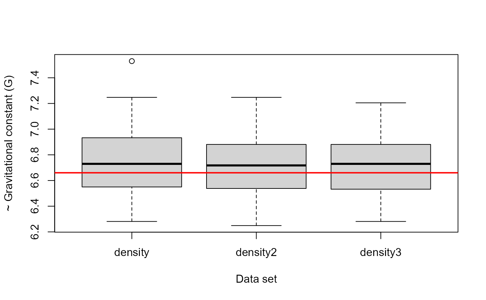

Cavendish's Determinations of the Density of the Earth
Cavendish.RdHenry Cavendish carried out a series of experiments in 1798 to determine the mean density of the earth, as an indirect means to calculate the gravitational constant, G, in Newton's formula for the force (f) of gravitational attraction, \(f = G m M / r^2\) between two bodies of mass m and M.
Stigler (1977) used these data to illustrate properties of robust estimators with real, historical data. For these data sets, he found that trimmed means performed as well or better than more elaborate robust estimators.
Usage
data(Cavendish)Format
A data frame with 29 observations on the following 3 variables.
densityCavendish's 29 determinations of the mean density of the earth
density2same as
density, with the third value (4.88) replaced by 5.88density3same as
density, omitting the the first 6 observations
Details
Density values (D) of the earth are given as relative to that of water. If the earth is regarded as a sphere of radius R, Newton's law can be expressed as \(G D = 3 g / (4 \pi R)\), where \(g=9.806 m/s^2\) is the acceleration due to gravity; so G is proportional to 1/D.
density contains Cavendish's measurements as analyzed, where he treated the
value 4.88 as if it were 5.88. density2 corrects this.
Cavendish also changed his experimental apparatus after the sixth determination,
using a stiffer wire in the torsion balance. density3 replaces the first
6 values with NA.
The modern "true" value of D is taken as 5.517. The gravitational constant can be expressed as \(G = 6.674 * 10^-11 m^3/kg/s^2\).
Source
Kyle Siegrist, "Virtual Laboratories in Probability and Statistics", http://www.math.uah.edu/stat/data/Cavendish.html
Stephen M. Stigler (1977), "Do robust estimators work with real data?", Annals of Statistics, 5, 1055-1098
References
Cavendish, H. (1798). Experiments to determine the density of the earth. Philosophical Transactions of the Royal Society of London, 88 (Part II), 469-527. Reprinted in A. S. Mackenzie (ed.), The Laws of Gravitation, 1900, New York: American.
Brownlee, K. A. (1965). Statistical theory and methodology in science and engineering, NY: Wiley, p. 520.
Examples
data(Cavendish)
summary(Cavendish)
#> density density2 density3
#> Min. :4.880 Min. :5.070 Min. :5.100
#> 1st Qu.:5.300 1st Qu.:5.340 1st Qu.:5.340
#> Median :5.460 Median :5.470 Median :5.460
#> Mean :5.448 Mean :5.482 Mean :5.483
#> 3rd Qu.:5.610 3rd Qu.:5.620 3rd Qu.:5.625
#> Max. :5.850 Max. :5.880 Max. :5.850
#> NA's :6
boxplot(Cavendish, ylab='Density', xlab='Data set')
abline(h=5.517, col="red", lwd=2)

# trimmed means
sapply(Cavendish, mean, trim=.1, na.rm=TRUE)
#> density density2 density3
#> 5.456000 5.483600 5.479474
# express in terms of G
G <- function(D, g=9.806, R=6371) 3*g / (4 * pi * R * D)
boxplot(10^5 * G(Cavendish), ylab='~ Gravitational constant (G)', xlab='Data set')
abline(h=10^5 * G(5.517), col="red", lwd=2)
